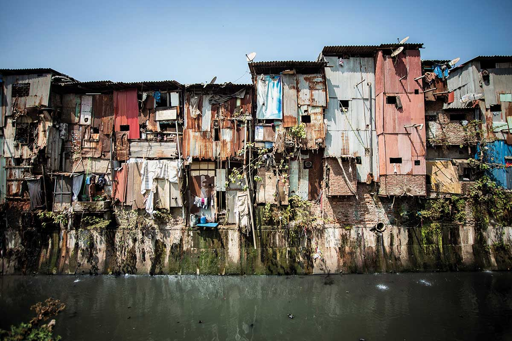

1. Rapid Urbanization and Overpopulation
Cities around the world are growing more rapidly as people move in searching for better opportunities. However, this growth often outplaces the development of various infrastructure and services. This results in many urban areas experiencing issues such as overcrowding, traffic congestion, and increasing demand on basic amenities such as water, electricity, and healthcare. Unplanned urban expansion may also lead to land misuse and poor environmental management. Without proper planning, cities become less livable and more vulnerable to future problems.

2. Inadequate Housing and Slum Conditions
A major challenge in many cities is the lack of affordable and safe housing. This leads to the rise of informal settlements or slums, where people live in cramped, unsafe, and unsanitary conditions. Slum dwellers often lack access to clean water, sanitation, and secure tenure. These environments increase health risks and reduce quality of life. Addressing this issue requires investment in housing and inclusive urban development.

3. Poor Public Transport and Traffic Congestion
Many cities lack efficient, safe, and accessible public transportation systems. This forces people to rely on private vehicles, leading to severe traffic congestion and longer travel times. Poor transport options limit mobility, especially for low-income residents. It also contributes to air pollution and greenhouse gas emissions. Sustainable urban transport is essential for reducing inequalities and improving quality of life.
4. Environmental Challenges in Cities
Urban areas contribute significantly to pollution and environmental degradation. Issues like poor air quality, inadequate waste disposal, and loss of green spaces are common. These problems affect public health, contribute to climate change, and reduce urban resilience. Additionally, many cities suffer from the "urban heat island" effect, where temperatures are significantly higher than in surrounding areas. Sustainable environmental practices are crucial to making cities healthier and more livable.

5. Social Inequity and Vulnerability to Disasters
Urban development often leaves behind vulnerable groups such as the poor, elderly, and disabled. These communities may lack access to basic services, decent housing, and job opportunities. They are also more exposed to risks from natural disasters like floods and earthquakes due to weak infrastructure and poor planning. This deepens social inequality and limits community resilience. Inclusive policies are needed to ensure that no one is left behind in urban development.